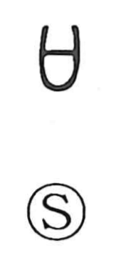

Explanation
Shirakawa understands 口 as a pictograph of a ritual receptacle—a sai—into which written prayers were placed and offered in covenant rites. In the oracle-bone and bronze inscriptions there is no unambiguous example of this graph as a human mouth; the forms consistently point to this sacred container. Read in this way, the structure and intent of many characters that include 口 become clear—such as 古, 右, 可, 歌, 召, 名, 各, 客, 吾, 吉, 舎, 告, 害, 史, 兄, 祝, 啓, 品, 区(區), 臨, 厳(嚴)—whose earliest senses relate to ritual utterance, proclamation, or offerings. A separate graph for the human mouth also existed from very early times, already visible in texts like the Book of Odes and the Book of Documents, though distinguishing the two forms with certainty is no longer possible.